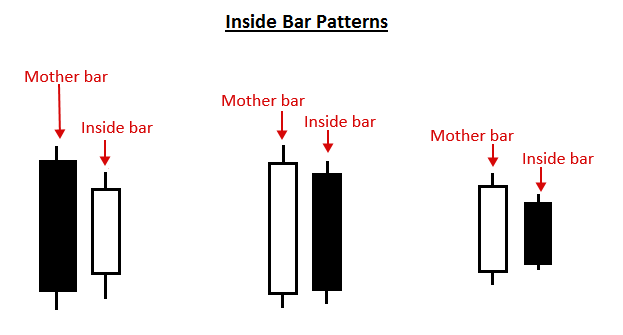
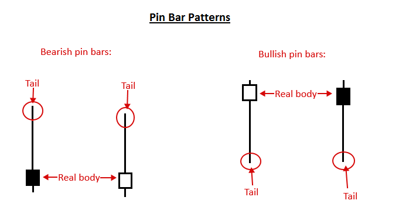
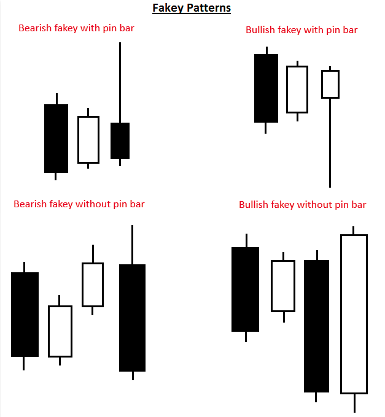
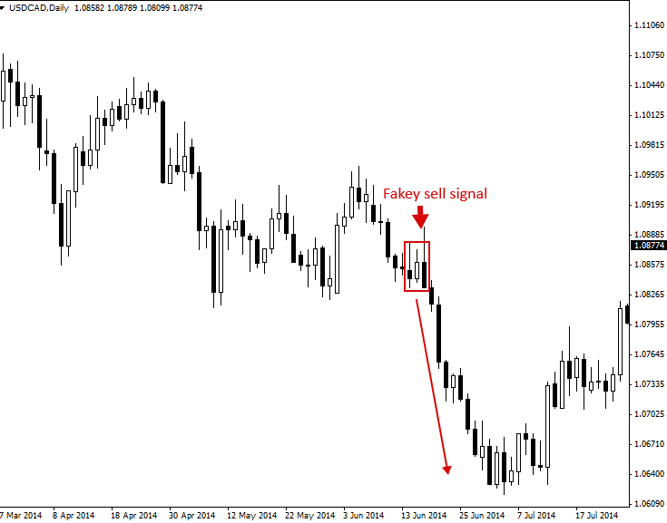
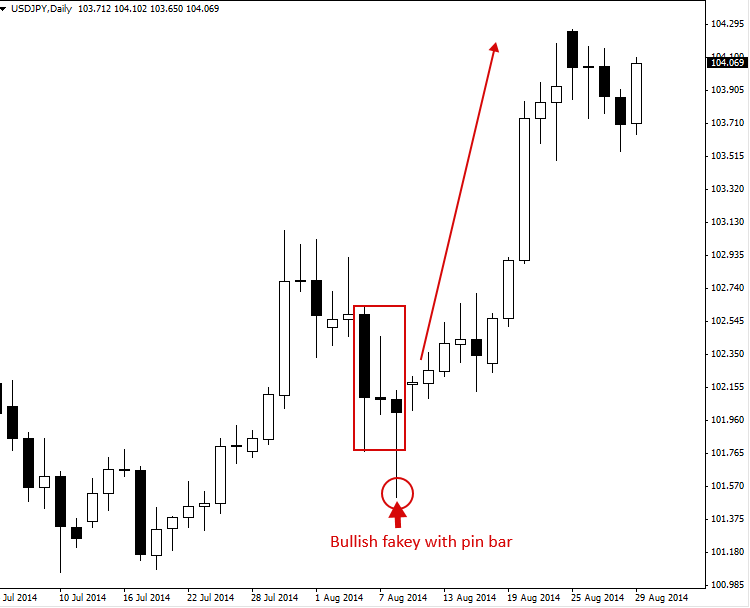
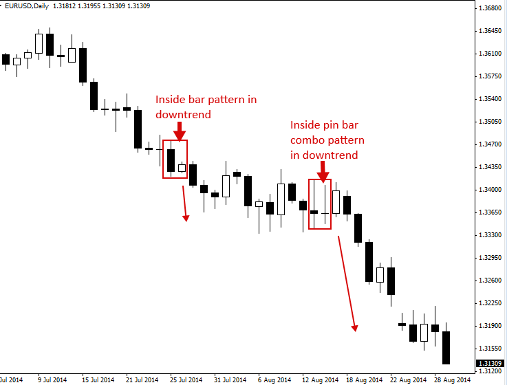
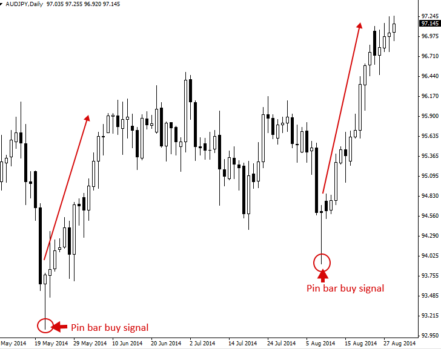
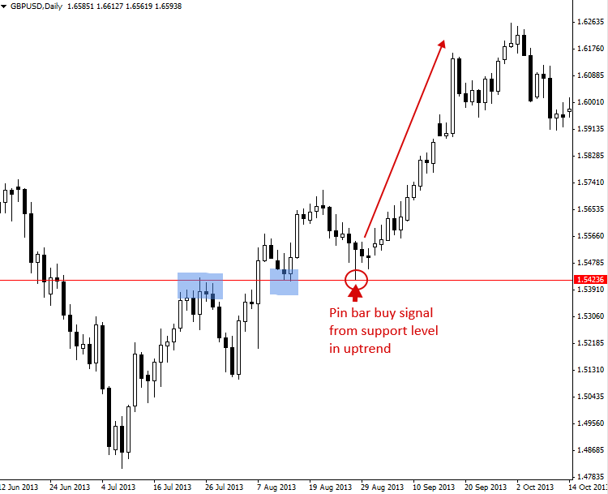

What Is Price Action? – Price Action Trading Introduction
What is Price Action? – Price Action Trading Explained
가격 움직임 거래는 시간 경과에 따른 기본적인 가격 움직임을 분석하는 금융 시장 투기 방법론입니다. 많은 개인 투자자, 특히 기관 투자자와 헤지펀드 매니저들이 증권이나 금융 시장의 미래 가격 방향을 예측하는 데 이 방법을 사용합니다.
간단히 말해서, 가격 움직임은 가격이 어떻게 변하는지, 즉 가격의 '움직임'을 말합니다. 이는 유동성과 변동성이 높은 시장에서 가장 쉽게 관찰되지만, 실제로 자유 시장에서 매매되는 모든 것은 가격 움직임을 유발합니다.
가격 움직임 거래는 시장 움직임에 영향을 미치는 근본적인 요인을 무시하고, 대신 시장의 가격 이력, 즉 특정 기간 동안의 가격 움직임을 주로 살펴봅니다. 따라서 가격 움직임은 기술적 분석의 한 형태이지만, 대부분의 기술적 분석과 차별화되는 점은 과거 또는 최근 가격과 현재 가격 간의 관계에 주로 초점을 맞춘다는 점입니다. 과거 가격에서 도출된 '중간' 가치와는 대조적입니다.
다시 말해, 가격 행동 트레이딩은 가격에서 파생된 간접적인 지표를 포함하지 않기 때문에 '순수한' 기술적 분석의 한 형태입니다. 가격 행동 트레이더는 시장이 스스로 생성하는 1차 데이터, 즉 시간 경과에 따른 가격 움직임에만 관심을 갖습니다.
- 가격 움직임 분석을 통해 트레이더는 시장의 가격 움직임을 이해하고, 현재 시장 구조를 설명하는 심리적 시나리오를 구축할 수 있는 설명을 얻을 수 있습니다. 경험 많은 가격 움직임 트레이더들은 시장에 대한 자신만의 심리적 이해와 '직감'을 수익성 있는 거래의 주된 이유로 꼽는 경우가 많습니다.
가격 움직임 트레이더는 과거 시장 가격 변동 이력을 활용하는데, 일반적으로 최근 3~6개월간의 가격 움직임에 집중하며, 더 먼 과거 가격 이력에는 다소 덜 집중합니다. 이러한 가격 이력에는 시장의 스윙 고점과 스윙 저점, 그리고 지지선과 저항선이 포함됩니다.
트레이더는 시장의 가격 움직임을 활용하여 시장 움직임에 내재된 인간의 사고 과정을 설명할 수 있습니다. 모든 시장 참여자는 거래할 때 시장 가격 차트에 가격 움직임의 '단서'를 남기는데, 이러한 단서를 해석하고 활용하여 시장의 다음 움직임을 예측할 수 있습니다.
Price Action Trading – Keeping it Simple
가격 변동 거래자들은 종종 “Keep It Simple Stupid”라는 문구를 사용합니다. 이는 많은 사람들이 차트를 여러 기술 지표로 흐리게 만들고 일반적으로 시장을 과도하게 분석하여 거래를 지나치게 복잡하게 만든다는 사실을 가리킵니다.
- 가격 변동 거래는 간단한 가격 변동만을 이용한 가격 차트에서의 거래를 의미하며, ‘clean chart trading’, ‘naked trading’, ‘raw or natural trading’라고도 불립니다.
가격 행동 거래의 단순하고 단순화된 접근 방식은 트레이더의 차트에 지표가 없고, 거래 결정에 경제 사건이나 뉴스를 사용하지 않는다는 것을 의미합니다. 오로지 시장의 가격 행동에만 집중하며, 가격 행동 트레이더들은 이 가격 행동이 시장에 영향을 미치고 시장 움직임을 유발하는 모든 변수(뉴스, 경제 데이터 등)를 반영한다고 생각합니다. 따라서 매일 시장에 영향을 미치는 다양한 변수를 파악하고 분류하는 것보다, 시장을 분석하고 가격 행동을 바탕으로 거래하는 것이 훨씬 간단하다는 것을 의미합니다.
Price Action Trading Strategies (Patterns)
가격 변동 패턴은 가격 변동 '트리거', '설정' 또는 '신호'라고도 불리며, 실제로 가격 변동 거래에서 가장 중요한 측면입니다. 이러한 패턴은 거래자에게 가격이 다음에 어떻게 움직일지에 대한 강력한 단서를 제공하기 때문입니다.
다음 다이어그램은 시장에서 거래하는 데 사용할 수 있는 몇 가지 간단한 가격 행동 거래 전략의 예를 보여줍니다.
인사이드 바 패턴은 인사이드 바와 이전 바(보통 "모체 바"라고 함)로 구성된 두 개의 바 패턴입니다. 인사이드 바는 모체 바의 고가에서 저가 범위 내에 완전히 포함됩니다. 이 가격 움직임 전략은 일반적으로 추세장에서 돌파 패턴으로 사용되지만, 주요 차트 레벨에서 형성될 경우 반전 신호로 거래될 수도 있습니다.

핀 바 패턴은 단일 캔들스틱으로 구성되며, 가격 하락과 시장 반전을 나타냅니다. 핀 바 신호는 추세장이나 박스권 시장에서 효과적이며, 주요 지지선이나 저항선에서 역추세로 매매할 수도 있습니다. 핀 바는 가격이 꼬리가 가리키는 방향과 반대로 움직일 수 있음을 시사합니다. 핀 바의 꼬리가 가격 하락과 시장 반전을 나타내기 때문입니다.

가짜 패턴은 내부 봉 패턴의 허위 돌파로 구성됩니다. 즉, 내부 봉 패턴이 잠시 돌파한 후 반전하여 모봉이나 내부 봉 범위 내에서 다시 마감하는 경우, 가짜 패턴입니다. "가짜"라고 불리는 이유는 시장이 한 방향으로 돌파하는 것처럼 보이지만 반대 방향으로 반등하여 해당 방향으로 가격 움직임을 유발하기 때문입니다. 가짜 패턴은 추세, 주요 가격대의 추세 반대, 그리고 거래 범위 내에서 매우 효과적입니다.

Trading with Price Action Patterns
가격 변동 패턴을 활용한 거래의 실제 사례를 살펴보겠습니다.
첫 번째 차트는 약세 가짜 매도 신호 패턴을 보여줍니다. 이 예시에서는 차트 왼쪽 상단에서 시작하여 가격이 왼쪽으로 이동하면서 전반적인 하락 추세가 나타나는 것을 볼 수 있으므로 추세는 이미 하락 중이었습니다. 따라서 이 가짜 매도 신호는 전반적인 일봉 차트 하락 추세와 일치하며, 이는 긍정적입니다. 일반적으로 이러한 추세에 맞춰 매매하면 가격 움직임이 유리하게 작용할 가능성이 더 높습니다.

아래 차트는 상승장세에서 강세 페이키 핀바 콤보 설정의 예를 보여줍니다. 일반적으로 시장이 단기적으로 강한 편향을 보일 때, 즉 최근 한 방향으로 공격적으로 움직일 때, 가격 움직임 트레이더는 이러한 단기 모멘텀에 맞춰 매매하고자 합니다.

다음 예시에서는 인사이드 바 거래 패턴을 살펴보겠습니다. 이 차트는 일반적인 인사이드 바 신호와 인사이드 핀바 콤보 패턴을 모두 보여줍니다. 인사이드 핀바 콤보는 인사이드 바에 핀바를 더한 형태입니다. 이러한 패턴은 아래 차트에서 볼 수 있듯이 추세 시장에서 매우 효과적입니다.

마지막 차트는 핀바 패턴의 예시를 보여줍니다. 두 핀바 매수 신호 이후 큰 폭의 상승 움직임에 주목하세요. 또한, 이 두 핀바는 차트에서 핀바로 식별할 수 있는 다른 바들과 비교했을 때 긴 꼬리를 가지고 있다는 점에 주목하세요. 이 두 핀바처럼 긴 꼬리를 가지고 있고 주변 가격 움직임에서 뚜렷하게 튀어나와 있는 핀바는 종종 매매하기에 매우 좋은 조건입니다.

Trading Price Action Patterns with Confluence
가격 움직임 신호를 활용한 트레이딩은 신호 자체뿐만 아니라 차트에서 신호가 형성되는 위치도 중요합니다. 모든 핀 바, 인사이드 바 등이 동일하게 만들어지는 것은 아닙니다. 특정 가격 움직임 신호가 시장에서 형성되는 위치에 따라, 해당 신호를 트레이딩하지 않을 수도 있고, 주저 없이 바로 적용하고 싶을 수도 있습니다.
가장 좋은 가격 움직임 신호는 시장의 '합류' 지점에서 형성되는 신호입니다. 합류는 간단히 말해 사람이나 사물이 '모이는 것'을 의미합니다. 가격 움직임 거래의 경우, 차트에서 최소 두 가지 이상의 요소가 가격 움직임 진입 신호와 일치하는 영역을 찾습니다. 이러한 경우, 가격 움직임 신호가 '합류'되었다고 합니다.
아래 차트 예시에서 합류 지점이 있는 핀 바 패턴의 좋은 예를 볼 수 있습니다. 합류 지점은 핀 바가 상승 추세 시장 방향으로 형성되었고, 해당 상승 추세의 지지선에서 형성되었다는 것을 의미합니다. 따라서 추세선과 지지선이 합류하는 지점이 있는데, 이러한 요소들이 함께 작용하여 핀 바 매수 신호에 더 큰 가중치를 부여합니다. 가격 움직임 신호의 이면에 더 많은 합류 요인이 있을수록, 그 신호는 더 높은 확률로 신호로 간주됩니다.

Conclusion
이 가격 변동 거래 튜토리얼을 즐겁게 읽으셨기를 바랍니다. 이제 가격 변동이 무엇이고 어떻게 거래하는지에 대한 기본 원리를 확실히 이해하셨을 겁니다.
앞으로 가격 액션 거래에 대한 이해와 지식을 넓히는 것이 좋습니다. 여기서 다루는 것보다 가격 액션 거래에 대한 이해가 훨씬 더 풍부하기 때문입니다.
https://priceaction.com/price-action-university/beginners/what-is-price-action/